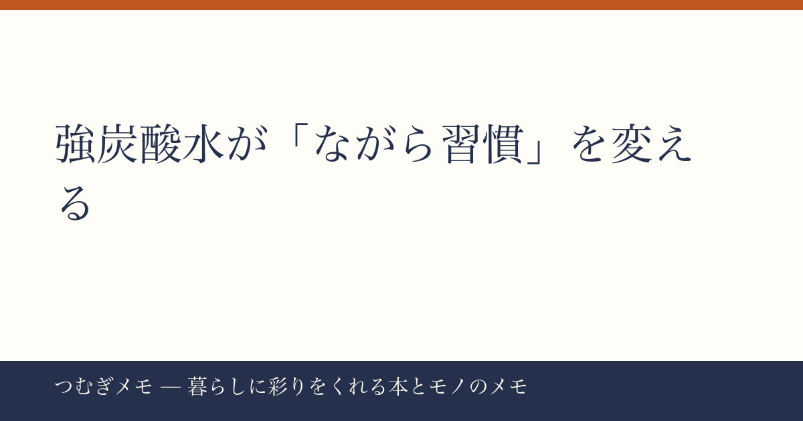

こんにちは、つむぎです。今週のバズを眺めていたら、ある飲み物が楽天総合で1位と5位にダブルランクインしているのを見つけて、思わず手を止めてしまいました。
この記事でわかること: 強炭酸水が今これほど売れている理由と、「飲む」だけで終わらせない暮らしへの取り入れ方。
今週の要点
- 同一商品「OZA SODA 強炭酸水 500ml×48本」が楽天総合1位・5位に同時ランクイン（レビュー1.7万件超・★4.68）
- 大容量まとめ買いの定番化は、アルコール代替・マインドフルな休息という意識の変化と連動している
- 飲み方・使い方に少し工夫するだけで、日常の「ひと息」の質が明確に変わる
---
今週の楽天ランキングで目を引いたのは、「OZA SODA 強炭酸水 500ml 48本（24本×2ケース）」が1位と5位のふたつの枠を同時に占めていた事実です。レビュー件数は1万7000件超、評価は★4.68。同じ商品がランキングの別順位に重複して並ぶのは、楽天のアルゴリズム上よほど爆発的なカートイン数が重なっているときにしか起きません。
これは「たまたま安かったから買った」という衝動買いではなく、48本という大ロットをまとめて購入する人が継続的に流入している、つまり「定期消費品として認定した人」が急増していることを示しています。ペットボトルのお茶やコーヒーが冷蔵庫に常駐するのと同じ感覚で、強炭酸水がその棚に滑り込んだのでしょう。
今日できる行動: 試しに12本入りの小ロットで1週間使ってみて、自分の消費ペースを計測する。「週に何本飲む人か」がわかった時点で、まとめ買いに切り替えるかどうかの判断が合理的になります。
---
強炭酸水の需要が伸びている背景には、いくつかの重なりがあると僕は見ています。
ひとつはアルコール離れの潮流です。20〜40代を中心に「夜の一杯」を減らす動きは、ここ数年で調査結果も報じられているほど広がっています。しかし「ノンアル飲料で代替する」だけでは、「飲む行為の儀式性」が満たされない。その点、強炭酸の「刺激感」はビールや炭酸カクテルに近い感覚を与えてくれるため、"飲む行為そのもの"の代替として機能しやすい。
もうひとつは「ながら飲み」から「意識的に飲む」への転換です。水分補給としての水、覚醒目的のコーヒーと違い、強炭酸水を飲む瞬間は少し「行為に集中」せざるを得ない。喉への刺激が強いから、読書中やPC作業中にぼんやり口に運ぶのではなく、一度手を止めてグラスを傾ける。この「小さな中断」が実はマインドフルな休息になっているのです。
暮らしに彩りを、というテーマで言えば強炭酸水は「飲み物」ではなく「場のスイッチ」として捉えるとより豊かに使えます。「これを開けたら読書タイム」「グラスに注いだら仕事終わり」という儀式のトリガーにする。コストは1本あたりで計算するとペットボトルのお茶とほぼ変わらないのに、体験の質が上がる。これがレビュー1.7万件超の評価に集約されている価値だと思います。
今日できる行動: お気に入りのマグカップやグラスを決めて、「強炭酸水専用グラス」として運用してみる。器を変えるだけで飲む行為が少し特別になります。
---
このブログのテーマ上、本との相性についても書いておきたいと思います。
読書中の飲み物には、「香りが強すぎない」「手が汚れない」「眠くならない」という3条件があると僕は考えています。コーヒーは香りと覚醒効果が強すぎて本の世界に没入しにくい時間帯がある。ハーブティーは準備に手間がかかる。その点、強炭酸水はグラスに注いでそのまま置いておける。刺激が欲しい瞬間にだけ一口飲む、という「必要に応じて飲む」使い方にも向いています。
特に相性がいいのは、集中力の持続が必要なノンフィクションや実用書を読む時間帯です。炭酸の刺激がほどよいリフレッシュになって、ページが止まらなくなってくる夜の読書セッションを支えてくれます。
フレーバーについてはプレーンとレモンが選べますが、初めて試すならプレーンをおすすめします。レモンは料理の下処理（肉を漬けるなど）にも転用できるので、大容量で買う際はプレーンをメイン、レモンをサブで揃えると使い回しが効きます。
今日できる行動: 今夜の読書タイムに「強炭酸水をグラスに注いで、本を開く」だけのルーティンを1回試す。継続するかどうかはそのあとで決めればいい。
---
Q. 炭酸水は毎日飲んでも体に問題ないですか？
一般的に、無糖の炭酸水を適量飲むことに大きな問題はないとされています。ただし「効果保証」はできないため、気になる方はかかりつけの医師に確認することをおすすめします。ここで強調したいのは「無糖」であること。OZA SODAはプレーン・レモンともに無糖タイプなので、砂糖の摂取という点での心配は不要です。
Q. 48本は多すぎませんか？ 場所も取るし……
確かに場所は取ります。ただ、今週のランキングを見る限り、購入者の多くは「計画的に消費できる確信があるから大ロットを選んでいる」と考えられます。まずは近所のスーパーで6本パックを購入し、1週間で飲み切れるかを確認してから48本注文に進む、という2ステップが無駄のない試し方です。
Q. 強炭酸と普通の炭酸水、どう違うのですか？
炭酸ガスの圧力が高いほど「刺激感」が強くなります。強炭酸はその刺激が目的の飲み方——気分転換・食事の口直し・アルコール代替——に向いており、普通の炭酸水は「水代わりに飲む」日常使いに向いています。習慣化したい目的によって選び分けるのがシンプルな基準です。
---
強炭酸水という、一見地味なアイテムがランキングのトップを独占している事実は、暮らしの「小さな儀式」を大切にしたいという気分の高まりを映しているように思います。高価なインテリアや大掛かりな習慣改革ではなく、「1本の飲み物を変える」ことから始まる豊かさ——それがこのブログで伝えたいことの核心でもあります。
今週もお読みいただきありがとうございました。なお「つむぎメモ」はAIと一緒に運用している実験的なメディアです。毎週のバズを人間の視点で編集しながら、AIの情報処理スピードと組み合わせて記事を作っています。どんな記事が役に立ったか、X（@tsumugi_memo15）で気軽に教えてもらえると励みになります。
📚 目次へ